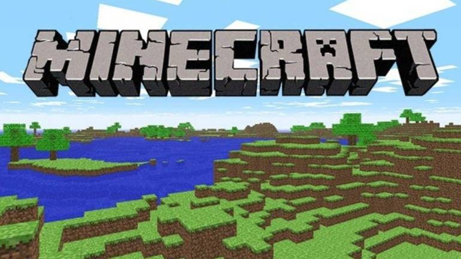
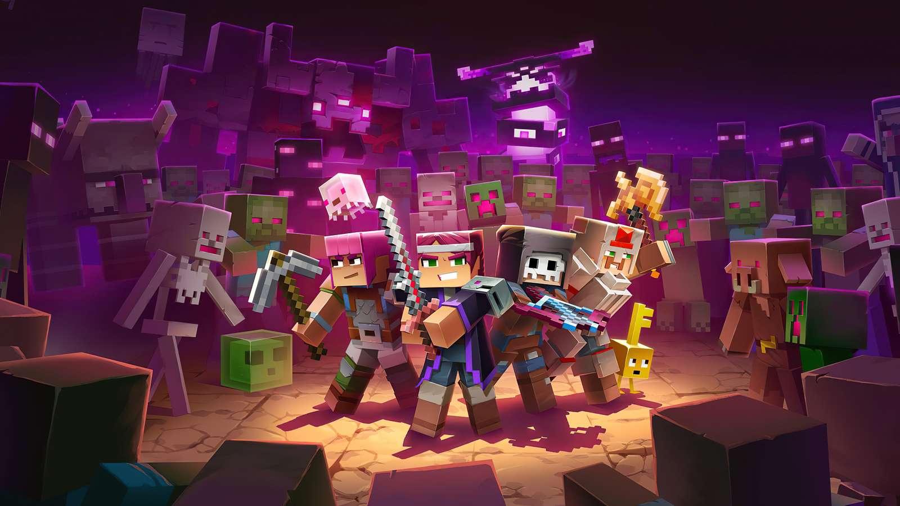
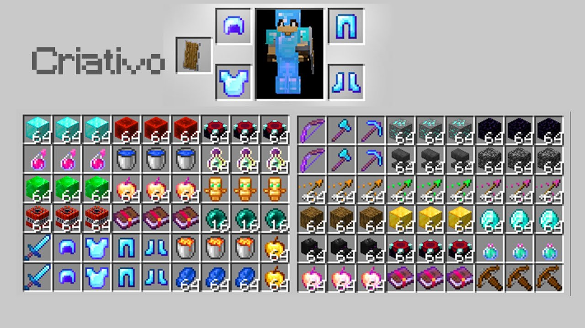

Sua história e popularidade
Minecraft é um jogo eletrônico sandbox de sobrevivência criado pelo desenvolvedor sueco Markus "Notch" Persson e posteriormente desenvolvido e publicado pela Mojang Studios, cuja propriedade intelectual foi obtida pela Microsoft em 2014. Lançado inicialmente em maio de 2009 como um projeto em desenvolvimento, seu lançamento completo ocorreu em novembro de 2011 para Microsoft Windows, macOS, Linux e alguns dispositivos móveis, sendo posteriormente relançado para uma ampla variedade de plataformas. É o jogo eletrônico mais vendido de todos os tempos, vendendo mais de 300 milhões de cópias em todas as plataformas até outubro de 2023, com mais de 140 milhões de jogadores ativos mensalmente.
A primeira versão
A versão original do Minecraft, que é a edição Java do jogo, começou a ser desenvolvida em 2009 com vários Alphas e Betas, desde 2010 até o início de 2011. A versão completa, intitulada “1.0 - Adventure Update” foi lançada em 18 de novembro de 2011.

Modo sobrevivência
No modo sobrevivência, os jogadores precisam reunir recursos naturais, como madeira e pedra encontrados no ambiente, para criar certos blocos e itens. Dependendo da dificuldade, criaturas hostis aparecem em áreas mais escuras fora de um determinado raio do personagem, exigindo que os jogadores construam um abrigo à noite.

Modo criativo
No modo criativo, os jogadores têm acesso a todos os recursos e itens do jogo através do menu inventário e podem colocá-los ou removê-los instantaneamente. Os jogadores podem alternar a capacidade de voar livremente pelo mundo do jogo à vontade, e seus personagens não sofrem nenhum dano e não são afetados pela fome.Esse modo de jogo ajuda os jogadores a se concentrarem na construção e criação de projetos de qualquer tamanho, sem perturbações.

Você pode comprar o Minecraft diretamente pelo Site oficial ou se preferir pode baixar gratuitamente com todas as versões inclusas, clicando aqui.